Welcome
- https://github.com/philwebb/practical-cloudfoundry
- Apache 2.0 licensed
- twitter: @phillip_webb
| z, ? | toggle help (this) |
| space, → | next slide |
| shift-space, ← | previous slide |
| d | toggle debug mode |
| ## <ret> | go to slide # |
| c, t | table of contents (vi) |
| f | toggle footer |
| r | reload slides |
| n | toggle notes |
| p | run preshow |
| P | toggle pause |
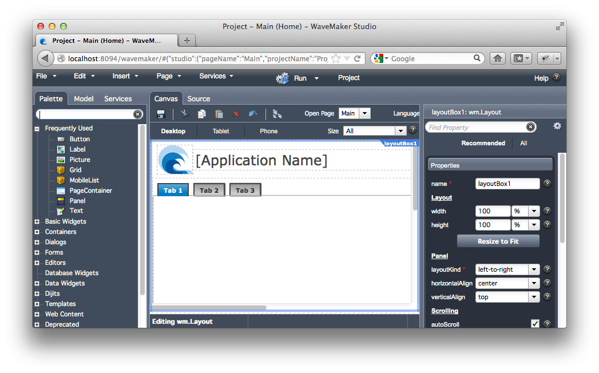
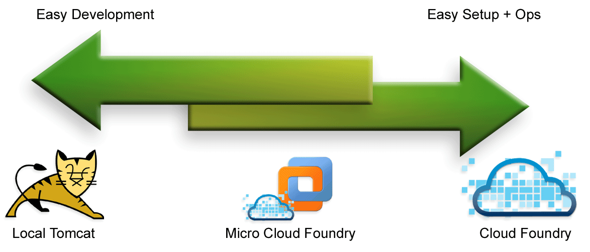
@Controller
public class MainController {
@RequestMapping({ "/", "/index.html" })
public ModelAndView index() {
return new ModelAndView("index",
Collections.singletonMap("username",
System.getProperty("user.name")));
}
}
System.getProperty("user.name")public interface UserDetails {
String getUsername();
}public interface UserDetails {
String getUsername();
}
@Component
public class LocalUserDetails implements UserDetails {
@Override
public String getUsername() {
return System.getProperty("user.name");
}
}@Controller
public class MainController {
@Autowired
private UserDetails userDetails;
@RequestMapping({ "/", "/index.html" })
public ModelAndView index() {
return new ModelAndView("index",
Collections.singletonMap("username",
userDetail.getUsername()));
}
}@Component
public class CloudUserDetails implements UserDetails {
@Override
public String getUsername() {
return CloudEnvironment.current().getUser();
}
}org.springframework.beans.factory.NoSuchBeanDefinitionException: No unique bean of type [org.cloudfoundry.practical. demo.core.UserDetails] is defined: expected single matching bean but found 2: [localUserDetails, cloudUserDetails] at org.springframework.beans.factory.support....
<beans profile="default">
<bean class="org.cloudfoundry.practical.demo.
local.LocalUserDetails">
</beans>
<beans profile="cloud">
<bean class="org.cloudfoundry.practical.demo.
cloud.CloudUserDetails"
</beans>package org.cloudfoundry.practical.demo.local;
@Configuration
@Profile("default")
@ComponentScan
public class LocalConfiguration {
}
package org.cloudfoundry.practical.demo.cloud;
@Configuration
@Profile("cloud")
@ComponentScan
public class CloudConfiguration {
}<param-name>contextClass</param-name>
<param-value>
org.springframework.web.context.support.
AnnotationConfigWebApplicationContext
</param-value>
<param-name>contextConfigLocation</param-name>
<param-value>
org.cloudfoundry.practical.demo.RootConfiguration
</param-value>
$ vmc env-add myapp key=value
public void example() {
String value = System.getEnv("key")
// ... do something with value
}
// or if a spring bean
@Value("#{systemEnvironment['key']}")
private String value;package org.cloudfoundry.tools.io;
public interface Resource {
// ...
}
public interface Folder extends Resource {
// ...
}
public interface File extends Resource {
// ...
}Folder folder = new LocalFolder("/path/on/disk");
File file = folder.getFile("subfolder/file.txt");
InputStream stream = file.getContent().asInputStream();
try {
// do something ...
} finally {
stream.close();
}Folder folder = new MongoFolder(db, "bucket");
File file = folder.getFile("subfolder/file.txt");
InputStream stream = file.getContent().asInputStream();
try {
// do something ...
} finally {
stream.close();
}import java.io.File;
public void someMethod(File folder) {
if(!folder.isDirectory()) {
throw new IllegalArgumentException("Must be a folder");
}
// ...
}import org.cloudfoundry.tools.io.Folder;
public void someMethod(Folder folder) {
// ...
}import java.io.File;
public void someMethod(File file) throw IOException {
StringBuffer content = new StringBuffer();
Reader reader = new FileReader(filePath));
try {
char[] buf = new char[1024];
int numRead=0;
while((numRead=reader.read(buf)) != -1){
String readData = String.valueOf(buf, 0, numRead);
fileData.append(readData);
buf = new char[1024];
}
finally {
reader.close();
}
// do something with content
}import org.cloudfoundry.tools.io.File;
public void someMethod(File file) {
String content = file.getContent().asString();
// do something with content
}
// Only throws RuntimeExceptions, IOException is wrappedHighlight no IOException
file.getContent()
String asString();
byte[] asBytes();
InputStream asInputStream();
OutputStream asOutputStream();
Reader asReader();
Writer asWriter();
void write(String content)
void write(InputStream content)
void write(Reader content);
void copyTo(OutputStream outputStream)
void copyTo(Writer writer)
// recursively delete backup files
folder.find().files().include(
FilterOn.names().ending(".bak")
).delete();
// copy immediate folders (excluding *.~*)
folder.list().folders().exclude(
FilterOn.antPattern("*.~*")
).copyTo(destinationFolder);
// Create a zip stream
InputStream zipStream = ZipArchive.compress(folder);
// Unpack a zip
ZipArchive.unpack(zipStream, destinationFolder);
// Read a zip file as if it is a folder
Folder zip = new ZipArchive(file);
zip.getFile("/inside/zip/file.txt").getContent().asString();Compress can handle resources
// Virtual folder exist in memory
Folder folder = new VirtualFolder();
folder.getFile("/a/b.txt").getContent().write("in memory")
// Only overwritten data consumes space
otherFolder.copyContentsTo(folder);
folder.getFile("a.txt").getContent().write("replaced");
folder.getFile("b.txt").getContent().asString();@Configuration
@Profile("cloud")
@ComponentScan
public class CloudConfiguration {
@Autowired
private MongoDbFactory mongo;
@Bean
public CloudMongoDbFactoryBean mongo() {
return new CloudMongoDbFactoryBean();
}
}<security:http>
<security:http-basic />
<security:logout />
<security:intercept-url pattern="/dav/**"
access="ROLE_WEBDAV" />
</security:http>
<bean name="cloudFoundryAuthenticationProvider"
class="org.cloudfoundry.tools.security.
CloudFoundryAuthenticationProvider">
<property name="authorities" value="ROLE_WEBDAV"/>
</bean>
<security:authentication-manager>
<security:authentication-provider
ref="cloudFoundryAuthenticationProvider"/>
</security:authentication-manager>
// If you keep data flowing you will not timeout
@RequestMapping("/drip")
public void drop(HttpServletResponse response) throws IOException {
ServletOutputStream outputStream = response.getOutputStream();
while(gotWorkToDo()) {
String fragment = doSomeWork(); // < 30 secs
outputStream.write(fragment);
response.flushBuffer();
}
}
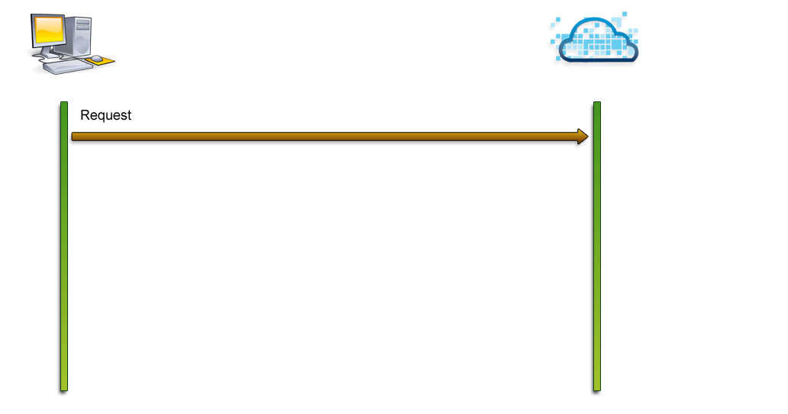
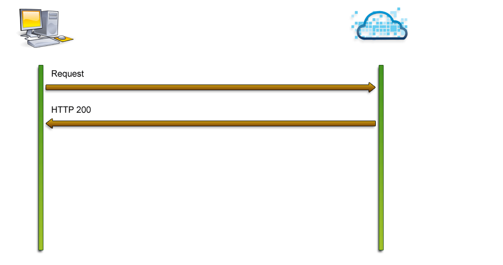
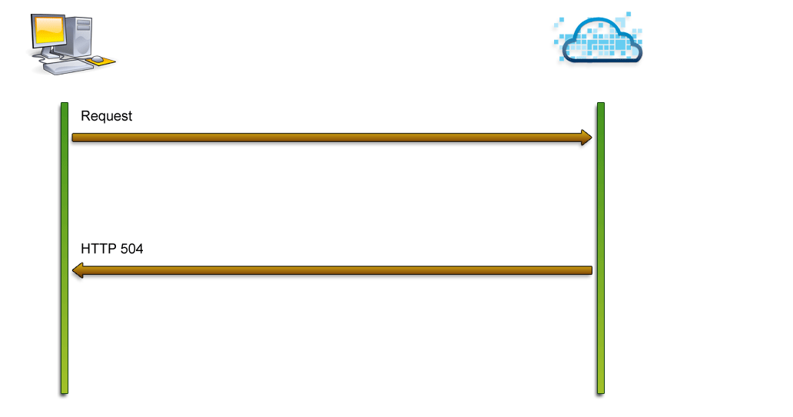
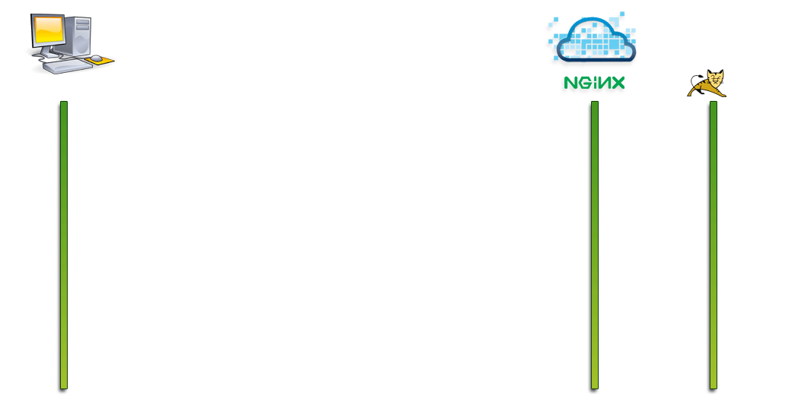
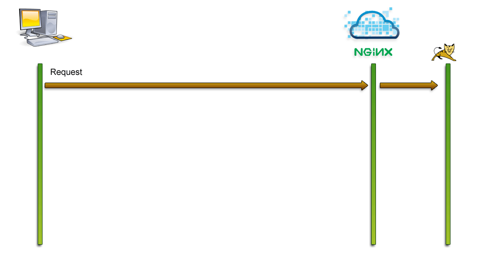
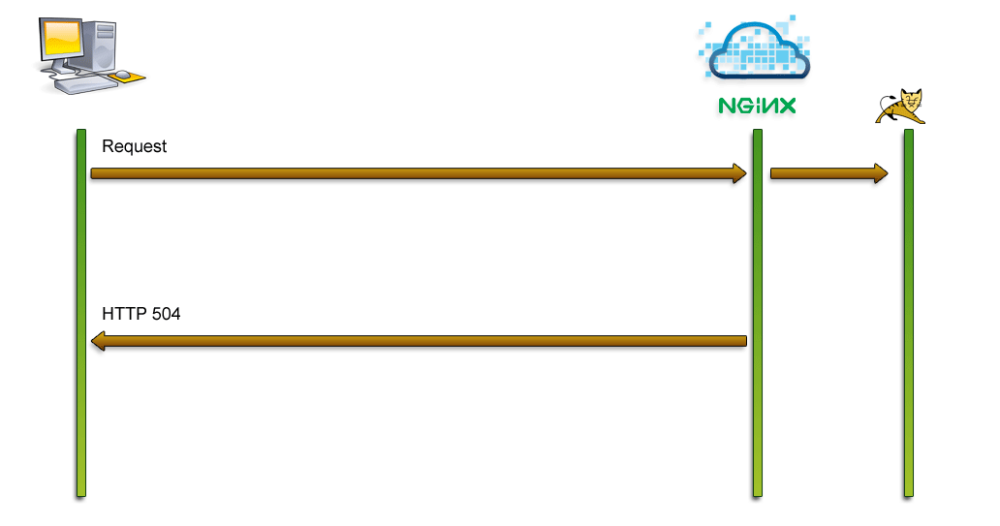
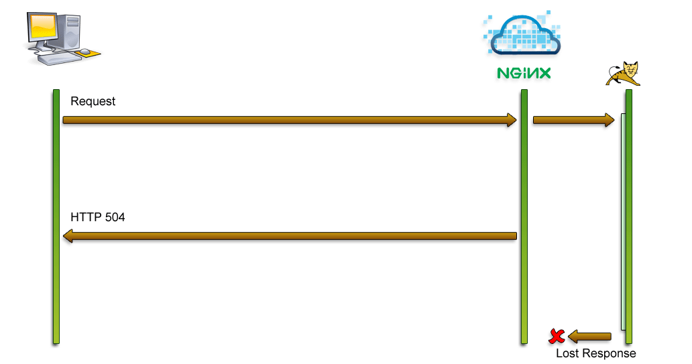
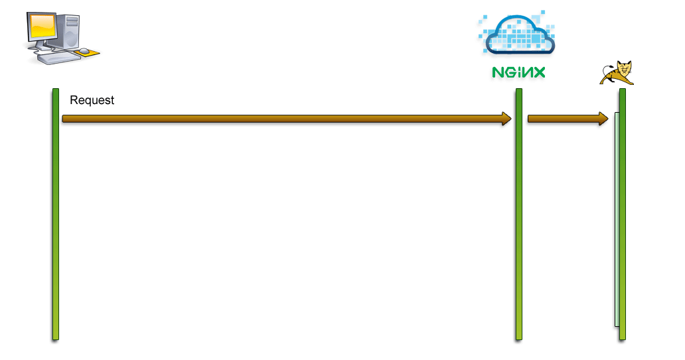
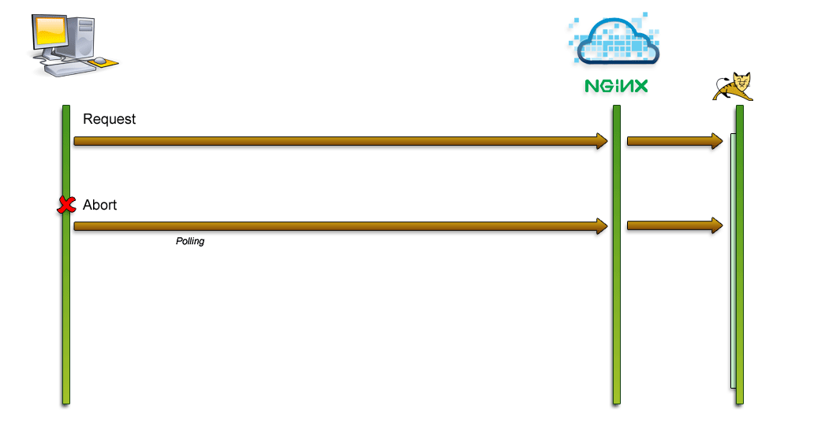
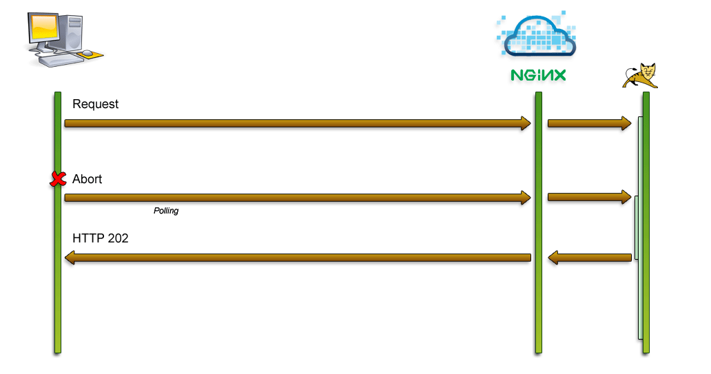
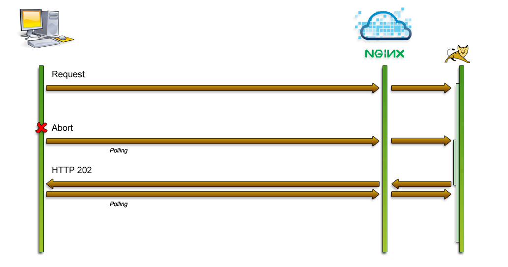
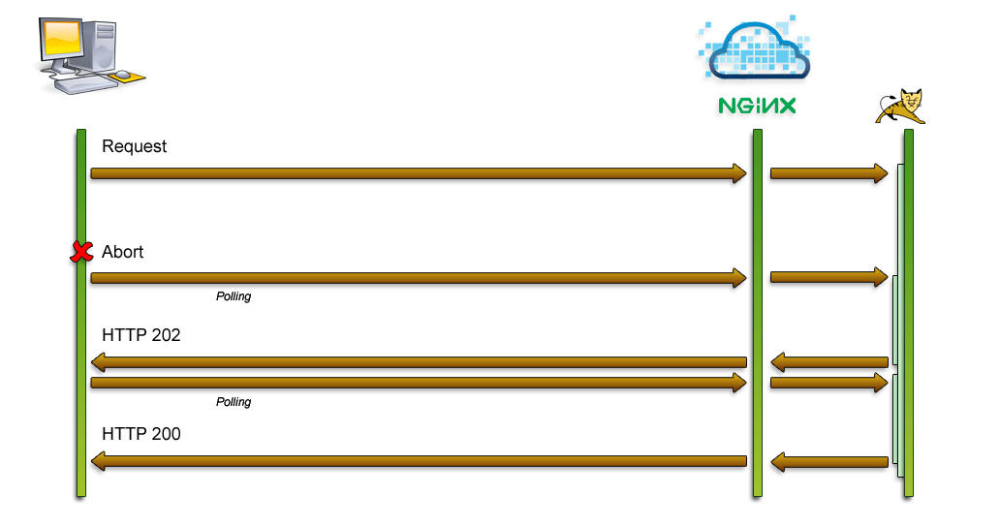
<script type="text/javascript"
th:src="@{/cloudfoundry/dojo-xhr-timeout-shim.js}"/>dojo.xhrPost({
url : requestUrl,
load : function(result) {
// handle the result
},
error : function(result,ioargs) {
// handle the error
}
});<filter>
<filter-name>timeoutProtectionFilter</filter-name>
<filter-class>org.springframework.web.filter.
DelegatingFilterProxy</filter-class>
</filter>
<filter-mapping>
<filter-name>timeoutProtectionFilter</filter-name>
<servlet-name>dispatcherServlet</servlet-name>
</filter-mapping>@Bean
public TimeoutProtectionFilter timeoutProtectionFilter() {
TimeoutProtectionFilter filter =
new TimeoutProtectionFilter();
filter.setProtector(timeoutProtectionStrategy());
return filter;
}
@Bean
public TimeoutProtectionStrategy timeoutProtectionStrategy() {
return new ReplayingTimeoutProtectionStrategy();
}CloudFoundryJavaCompiler compiler =
new CloudFoundryJavaCompiler();CloudFoundryJavaCompiler compiler =
new CloudFoundryJavaCompiler();
StandardJavaFileManager standardFileManager =
compiler.getStandardFileManager(null, null, null);
ResourceJavaFileManager fileManager =
new ResourceJavaFileManager(standardFileManager);// Use org.cloudfoundry.tools.io.File
// or org.cloudfoundry.tools.io.Folder
fileManager.setLocation(StandardLocation.CLASS_OUTPUT,
classOutputFolder);
fileManager.setLocation(StandardLocation.SOURCE_PATH,
sourceFolder);
fileManager.setLocation(StandardLocation.CLASS_PATH,
jarFile1, jarFile2);Iterable<? extends JavaFileObject> compilationUnits =
fileManager.list(StandardLocation.SOURCE_PATH, "",
Collections.singleton(JavaFileObject.Kind.SOURCE),
true);
CompilationTask task = compiler.getTask(null, fileManager,
null, Arrays.asList("-encoding", "utf8"), null,
compilationUnits);
task.call(); // returns true on success<dependency>
<groupId>${project.groupId}</groupId>
<artifactId>cloudfoundry-tomcat-standalone</artifactId>
<version>${project.version}</version>
<type>tar.gz</type>
<scope>runtime</scope>
</dependency><artifactId>maven-assembly-plugin</artifactId>
<goal>attached</goal>
<configuration>
<descriptors>
<descriptor>${basedir}/src/assembly/
cloudfoundry-tomcat-standalone.xml</descriptor>
</descriptors>
<appendAssemblyId>false</appendAssemblyId>
<finalName>cloudfoundry-tomcat-standalone</finalName>
</configuration><dependencySet>
<outputDirectory>/</outputDirectory>
<unpack>true</unpack>
<includes>
<include>
${project.groupId}:cloudfoundry-tomcat-standalone
</include>
</includes>
</dependencySet>
<outputDirectory>/webapps/ROOT</outputDirectory><context-param>
<param-name>contextInitializerClasses</param-name>
<param-value>
org.cloudfoundry.reconfiguration
.spring.CloudApplicationContextInitializer
</param-value>
</context-param>$ brew install dnsmasq
# /usr/local/etc/dnsmasq.conf address=/cvap.me/127.0.0.1 listen-address=127.0.0.1
$ sudo ssh -L 80:192.168.129.142:80 vcap@192.168.129.142
$ ssh vcap@api.vcap.me
$ sudo apt-get install vim
$ sudo vim /var/vcap/jobs/router/config/nginx.conf
# around line 66
proxy_send_timeout 3000;
proxy_read_timeout 3000;
$ sudo monit restart nginx